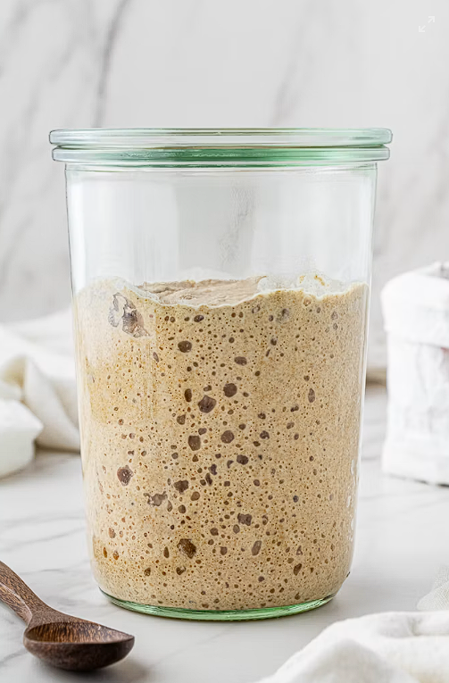

¿Por que elegir la Masa Madre?

- 100% natural: Solo harina, agua y sal. Sin ultraprocesados ni conservantes.
- Súper digerible: Fermentación lenta que reduce el gluten y no cae pesado.
- Sabor artesanal: Miga alveolada, corteza crujiente y perfil gastronómico único.
- Mayor durabilidad: Se conserva fresco más días de forma totalmente natural.
- Energía inteligente: Menor índice glucémico para una nutrición más equilibrada.